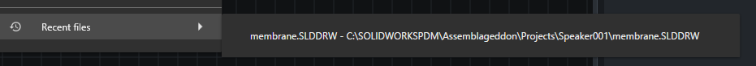

Run Visual Workflows
The run menu gives you several ways to execute the same visual workflow.

Run
Use Run when the workflow already contains everything it needs.
This is best for workflows that:
- Log in to a vault.
- Search for files.
- Work from the current vault folder.
- Do not depend on selected files or CSV input.
Run With Selected Files
Use a selected-file run option when the workflow should repeat file-specific actions for the files or folders you choose.
PDMShell keeps the most recent selected file runs in the Recent files menu so you can rerun the same workflow against a recently used file path without browsing again.

This is useful when the workflow uses placeholders such as:
$fileName$filePath$folderName$folderPath$revision$version
Each selected item provides its own context while the workflow runs.
Run With A Search Favorite
Use a search favorite when a saved PDM search should provide the files for the workflow.
This is useful for repeatable jobs such as:
- Processing all files returned by a saved engineering search.
- Running a cleanup workflow against a known search favorite.
- Applying the same workflow to a controlled list of matching files.
Run With CSV Input
Use CSV input when the workflow should run against paths listed in a file.
This is useful for migration, cleanup, reporting, or batch automation where the list of files is prepared outside PDMShell.
Choosing The Right Run Option
| Situation | Recommended option |
|---|---|
| The workflow is self-contained | Run |
| The workflow depends on selected files or folders | Run with selected files |
| The workflow should use a saved PDM search | Run with a search favorite |
| The workflow should use a prepared file list | Run with CSV input |